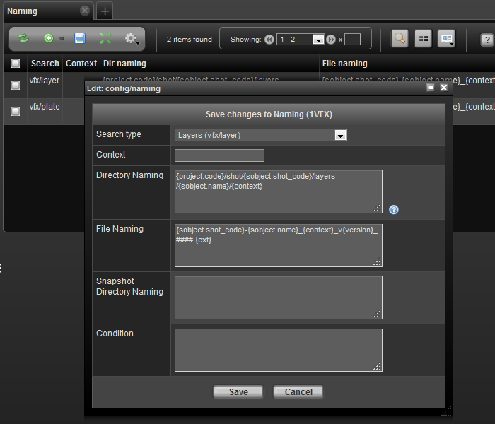

The naming page provides a way of controlling directory and file naming conventions through a simple expression language . Each naming entry can contain a directory naming and/or file naming. It is designed that so that a relatively non-technical user can create custom naming conventions for various sTypes.
The relative path expression language is a simple language, but in order to understand it you must know the basic components that generally make up a naming convention. The expression language allows access to almost any data in TACTIC. The keywords which are the most relevant in naming conventions are as follows:
|
parent: |
The parent sObject to the current sObject defined by the search type attribute |
|
sObject: |
The actual sObject which is being referenced |
|
snapshot: |
The child snapshot generated or being referenced for the naming convention. This contains the context and version information. |
|
file: |
The file object pertinent to the check-in. This allows for reference to the original file name or extension. |
|
login: |
The user who is carrying out the check-in or check-out. |
|
user: |
The user who is carrying out the check-in or check-out. |
The properties of these Search Objects are used to build up the naming convention.
A simple example of a relative path is as follows:
{project.code}/sequence/{parent.code}/{sobject.code}/{snapshot.context}/mayawhich after translation could be translated into:
sample3d/sequence/XG/XG001/model/maya
This expression is explicit in that every variable scopes the object that the attribute comes from.
Another example is for a file name:
{sobject.code}_{snapshot.context}_v{snapshot.version}.{ext}This can be translated into: chr001_model_v001.ma upon expansion.
The @GET(sobejct.code) or @GET(sobject.sthpw/snapshot.version) TACTIC expression language syntax can be used instead; however, the original keyword approach is more readable. In case you do decide to use the TEL syntax, here are the equivalents:
{basefile} = {$BASEFILE}
{ext} = {$EXT}
{project.code} = {$PROJECT}
{login} = {$LOGIN}
It is important to note that you can't fix TEL syntax with the keyword syntax in the same field of a naming entry.
TACTIC will fall back on the default convention which would be represented by the following expression. These defaults are slightly different from previous versions:
Dir Naming: {project.code}/{search_type}/{sobject.code}/{context}
File Naming: {file.name}_{context}_v{version}.{ext}
Checking in the file characterFile.ma would create the following file and directory structure:
sample3d/characters/chr001/publish/characterFile_v001.ma
Various assumptions have been made about which attributes are attached to which SObjects. It is often the case that the context is composed of a number of parts that are of interest to a naming convention.
For example, it is conceivable to have a context named: "model/hi". However, you may wish to break this up in a specific way in your naming convention. This is accomplished using [] notation common to many programming languages.
The following notation could be used for a directory using this: which could be translated into
Dir Naming: {code}/{context[0]}/maya/{context[1]}Result: chr001/model/maya/hiTo insert a naming convention expression, load a Naming view and click the Insert button to insert a new set of expressions.
A Naming Convention sObject has specific properties which are used to either define the convention or act as conditions to define if the convention should be used for the given checkin. When Inserting, fill in the following options:
|
Search Type |
The search_type to associate the naming convention to. |
|
Snapshot Type |
The snapshot type of the checkin to use as a condition (default for most TACTIC check-ins is 'file'. Default for directory checkin using the General Checkin Widget is 'dir'. Since this is a more advanced attribute, it is hidden by default) |
|
Context |
The snapshot context of the checkin to use as a condition (default checkin when there is no pipeline is 'publish') |
|
Dir Naming |
The expression entry for the directory naming convention |
|
File Naming |
The expression entry for the file naming convention |
|
Sandbox Dir Naming |
The expression entry for the user sandbox directory naming convention |
|
Latest versionless |
If set to true(checked), every time a check-in is created, a latest version of the main file will be created as well. If you want to always have a file that refers to the latest version of a model you can use this feature by calling it {sobject.code}_{context}_latest.{ext}. The latest version exists as copy by default. To make it a symlink, set the project setting versionless_mode to 'symlink'. Note: If this is checked, you need to have an entry in the naming table just for this versionless case in addition to the usual one for regular check-ins. |
|
Current versionless |
If set to true(checked), every time a check-in is created, a current version of the main file will be created as well. If you want to always have a file that refers to the latest version of a model you can use this feature by calling it {sobject.code}_{context}_latest.{ext}. The latest version exists as copy by default. To make it a symlink, set the project setting versionless_mode to 'symlink'. Note: If this is checked, you need to have an entry in the naming table just for this versionless case in addition to the usual one for regular check-ins. |
|
Manual version |
If set to true(checked), the incoming file name can dictate what the version of the checked-in snapshot appears as. For intance, if the incoming file name is dessert_v005.jpg, the version will appear as version 5. Another example is sun_V0030.0010.jpg. The version will appear as version 30. It tries to recognize the number immediately after the v or V in the file name. Zero or negative numbers are ignored. If such a version already exists, the check-in will throw an error |
|
Condition |
It can be set up so that differnet naming is adopted based on a particular attribute of the sObject. For instance, for the sType prod/asset, one can assign 2 naming entries. The default naming where the condition is left blank is adopted in most circumstance. The second special naming is adopted when the category attribute equals 'vehicle' by using this expression @GET(.category) =='vehicle'. |